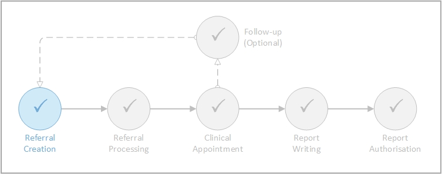
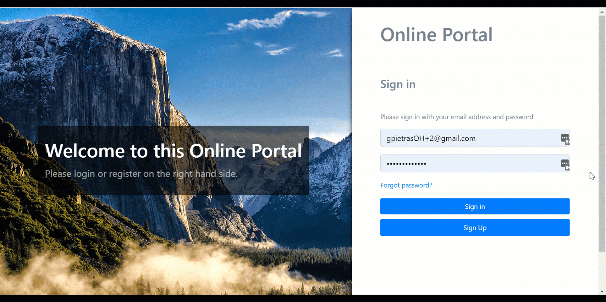
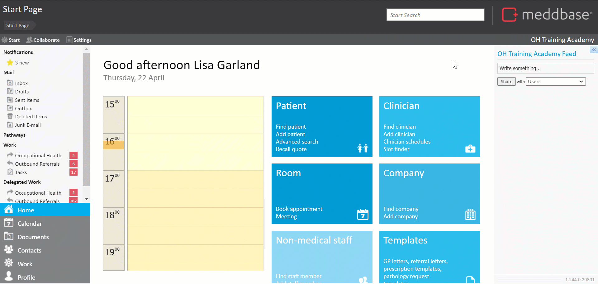
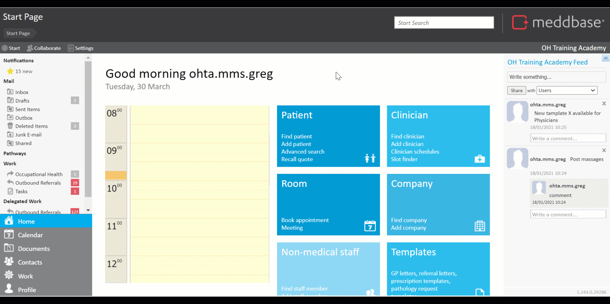

The Case Management workflow in Meddbase is initiated by:
Putting it into context, Referral Creation is the first phase in the overall Case Management life-cycle.

This article will walk you through the process of creating a referral in the Case Management workflow. Both via the Referral Portal and in Meddbase on behalf of the employer.
The process of sending an OH referral electronically via the Referral Portal is as follows:
The referral is created and confirmed.
Please note: The video below shows the Referral Portal user completing a questionnaire prior to sending the OH referral. This step is optional.
* To create and manage Cases, the manager needs to have the Case Management permission granted on their record in Meddbase. Click here for more details.
** Attaching documents during this process is optional. Documents added at the Attach documents step will be sent along with the referral letter to the OH provider.

Referral created on behalf of the referrer by a Meddbase user
Instead of sending a referral via the Referral Portal, the referrer may contact the OH provider via email or otherwise and request a referral to be generated and a booking made on their behalf in Meddbase.
This can be achieved in 1 of 2 ways:
To do this:-
1. Search for a patient record via Start Page > Find Patient
2. From the patient record select Refer patient
You are presented with the New Referral screen
3. In the Pick Referral Type section select Occupational Health
4. (Optional) Click in the Manager field and search for a specific manager to be assigned to this referral
5. In the Case Details section, create new or select a pre-existing Case
6. Click Next to continue
You now move onto the Write Referral iteration of the New Referral screen
7. Add Summary and Detail as required
8. Choose items from the Record Items to included list as required
9. Click Next to continue
You could change the Letter Template, listed at the bottom of the screen. In this example, we won't.
You are next presented with the Attach Relevant Documents iteration of the New Referral screen
9. From the list of available documents on the left, attach documents as required (either from your local machine or from the patient's record)
10. Click Make Referral
The referral is created and sent to Occupational Health triage for referral processing.

To do this:
At this point, automatic booking confirmation messages are triggered.
Depending on the Appointment Type setup the user may be prompted to select an existing case or assign the booking to a New Case.
Both require Pre-arrival Cases feature to be switched on. Click here for a detailed article.
